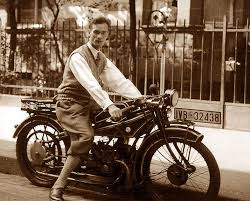
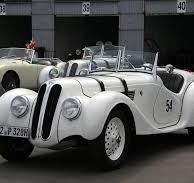
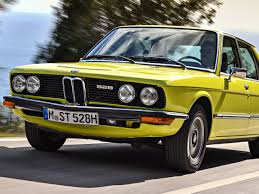
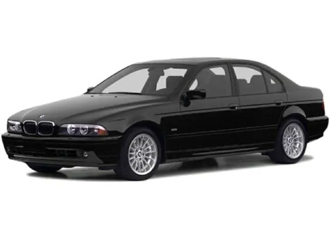
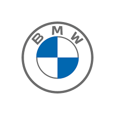

A Bayerische Motoren Werke AG (BMW) 1916-ban alakult Münchenben, kezdetben repülőmotorok gyártásával foglalkozott.
Az első világháború után a cég autók és motorkerékpárok gyártására váltott,
és 1923-ban bemutatta első motorkerékpárját, a BMW R32-t, amely a híres boxermotorral rendelkezett.

Az 1930-as évek
Az 1930-as években a BMW számos sikeres autót gyártott, köztük a BMW 328 sportautót, amely híressé vált a versenypályákon. A vállalat azonban a második világháború alatt ismét repülőgépmotorok gyártására állt át.

Az 1950-es évek
A háború után a BMW pénzügyi nehézségekkel küzdött, de az 1950-es években a BMW 501 és 502 modellek bevezetésével sikerült talpra állnia. 1959-ben a cég bemutatta a BMW 700-at, amely jelentős népszerűségnek örvendett.

A '70-es évek és a sportautók
A 1970-es években a BMW elkezdte a sportos és prémium autók irányába terelni a figyelmét. 1972-ben debütált a BMW 5-ös sorozat, majd 1975-ben a 3-as sorozat, amelyek máig a cég sikeres modelljei közé tartoznak.

A 80-as évektől napjainkig
A 1980-as években a BMW bevezette az M márkát, amely a cég sportmodelleit képviseli, például a BMW M3-at és M5-öt. A 1990-es években a vállalat felvásárolta a brit Mini márkát, majd a 2000-es évek elején bemutatta az i sorozatot, amely az elektromos és hibrid autókra összpontosít.

Jelenlegi helyzet
Ma a BMW a világ egyik vezető prémium autógyártója, és folyamatosan innovál, hogy lépést tartson a modern technológiai trendekkel, beleértve az elektromobilitást és az automatizált vezetést. A BMW autói nemcsak a teljesítményükről, hanem a prémium minőségükről és az élvezetes vezetési élményükről is ismertek.